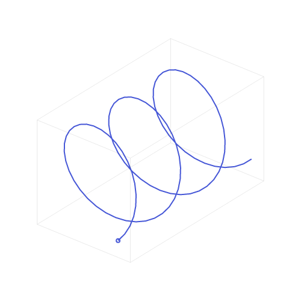

1. Гармонические колебания, преобразование Фурье
Для тех, кто хочет следить за кодом, вот загруженные библиотеки:
library(tidyverse)
# это стиль для ggplot (можно игнорировать эту команду)
theme_set(theme_bw()+
theme(text = element_text(size = 16))) 1. Гармонические колебания, их представления и их свойства
1.1 Гармонические колебания
Переодическое колебание — тип колебания, при котором значения параметров колебательной системы (амплитуда, период, частота) повторяются через равные промежутки времени. Примером такого колебания могут быть колебания маятников, струн, частиц воздуха и т. п.
Фрагмента графика простого гармонического коллебания:
tibble(t = seq(0, 7*pi, by = 0.001),
y = sin(t)) %>%
ggplot(aes(t, y))+
geom_line()+
geom_hline(yintercept = 0, linetype = 2)+
labs(caption = "sin(x)")
🤔 Почему фрагмент? Потому что идеальное гармоническое колебание не имеет ни начала ни конца. Реальные волны, представленые в мире все квазипереодические.
Фрагмента графика другого гармонического коллебания:
tibble(t = seq(0, 7*pi, by = 0.001),
y = sin(t)+sin(2*t)) %>%
ggplot(aes(t, y))+
geom_line()+
geom_hline(yintercept = 0, linetype = 2)+
labs(caption = "sin(x)+sin(2*x)")
Периодические колебания обычно имеют некоторую точку равновесия, около которой они колеблются (на графиках обозначена пунктирной линией).
1.2 Параметры гармонические колебания
Гармонические колебания имеют следующие параметры:
- амплитуда (A) — наибольшее отклонение колеблющегося тела от положения равновесия;
- период (T) — длительность одного цикла (например, в секундах)
tibble(t = seq(0, 7*pi, by = 0.001),
y = cos(t)) %>%
ggplot(aes(t, y))+
annotate("rect", xmin = 0, xmax = 2*pi, ymin = -1, ymax = 1, alpha = 0.5, fill = "lightblue")+
geom_line()+
geom_hline(yintercept = 0, linetype = 2)+
annotate("segment", x = 0.3, xend = 6, y = 1, yend = 1, color = "darkgreen", size = 2, arrow = arrow(ends = "both"))+
annotate("text", x = 3.2, y = 0.85, label = "T", size = 8, color = "darkgreen")+
annotate("segment", x = 4*pi, xend = 4*pi, y = 0, yend = 1, color = "firebrick3", size = 2, arrow = arrow(ends = "both")) +
annotate("text", x = 4*pi+0.6, y = 0.5, label = "A", size = 8, color = "firebrick3") +
annotate("segment", x = 5*pi, xend = 5*pi, y = 0, yend = -1, color = "firebrick3", size = 2, arrow = arrow(ends = "both")) +
annotate("text", x = 5*pi+0.6, y = -0.4, label = "A", size = 8, color = "firebrick3")+
labs(caption = "cos(x)")
- частота (f) — число периодов за секунду
\[f = \frac{1}{T}; T = \frac{1}{f}\]
Звуковая волна — обычная гармоническое колебания, а параметры этого колебания связаны с некоторыми параметрами нашего восприятия:
мы воспринимаем изменения в частотах как изменения в “высоте” звука;
мы воспринимаем изменения в амплитуде волны как изменения в “громкости” звука.
фаза (φ) — цикл гармонического колебания можно разделить на 360°
Вот так это выглядит в декартовой системе координат:
tibble(t = seq(0, 2*pi, by = 0.001),
y = sin(t)) %>%
ggplot(aes(t, y))+
geom_line()+
geom_hline(yintercept = 0, linetype = 2)+
annotate("point", x = 2*pi/4*0:4, y = 0)+
annotate("text", x = 2*pi/4*0:4, label = paste0(90*0:4, "°"), y = -0.05, size = 4)+
labs(caption = "sin(x)")
Вот так это выглядит в полярной системе координат:
tibble(t = seq(0, 2*pi, by = 0.001),
y = sin(t)) %>%
ggplot(aes(t, y))+
geom_line()+
geom_hline(yintercept = 0, linetype = 2)+
annotate("point", x = 2*pi/4*1:4, y = 0)+
annotate("text", x = 2*pi/4*1:4, label = paste0(90*1:4, "°"), y = 0.2, size = 4)+
coord_polar(start = -pi/2, direction = -1)+
labs(caption = "sin(x)")
Вот пример другой волны:
tibble(t = seq(0, 2*pi, by = 0.001),
y = sin(t)+sin(2*t)) %>%
ggplot(aes(t, y))+
geom_line()+
geom_hline(yintercept = 0, linetype = 2)+
annotate("point", x = 2*pi/4*0:4, y = 0)+
annotate("text", x = 2*pi/4*0:4, label = paste0(90*0:4, "°"), y = c(-0.2, -0.2, -0.4, 0.2, 0.2), size = 4) ->
p1
tibble(t = seq(0, 2*pi, by = 0.001),
y = sin(t)+sin(2*t)) %>%
ggplot(aes(t, y))+
geom_line()+
geom_hline(yintercept = 0, linetype = 2)+
annotate("point", x = 2*pi/4*1:4, y = 0)+
annotate("text", x = 2*pi/4*1:4, label = paste0(90*1:4, "°"), y = 0.55, size = 4)+
coord_polar(start = -pi/2, direction = -1)+
labs(caption = "sin(x)+sin(2x)") ->
p2
gridExtra::grid.arrange(p1, p2, nrow = 1)
А теперь можно убедиться, что косинус и синус это одно и то же, и различаются лишь фазой:
tibble(t = seq(0, 2*pi, by = 0.001),
sin = sin(t),
cos = cos(t)) %>%
gather(type, y, sin:cos) %>%
ggplot(aes(t, y, color = type))+
geom_line(show.legend = FALSE)+
geom_hline(yintercept = 0, linetype = 2)+
annotate("point", x = 2*pi/4*0:4, y = 0)+
annotate("text", x = 2*pi/4*0:4, label = paste0(90*0:4, "°"), y = -0.1, size = 4) ->
p3
tibble(t = seq(0, 2*pi, by = 0.001),
sin = sin(t),
cos = cos(t)) %>%
gather(type, y, sin:cos) %>%
ggplot(aes(t, y, color = type))+
geom_line()+
geom_hline(yintercept = 0, linetype = 2)+
annotate("point", x = 2*pi/4*1:4, y = 0)+
annotate("text", x = 2*pi/4*1:4, label = paste0(90*1:4, "°"), y = 0.55, size = 4)+
coord_polar(start = -pi/2, direction = -1) +
theme(legend.position = "top")->
p4
gridExtra::grid.arrange(p3, p4, nrow = 1)
Теперь мы можем определить гармонические калебания следующей формулой:
\[s(t) = A \times \cos(2\pi ft+\phi)\]
- A — амплитуда
- f — частота колебания
- \(\phi\) — фаза
- t — время
1.3 Сложение волн
Если сложить две одинаковые волны, получится волна с такой же частотой и фазой, а их совместная амплитуды, сложившись друг с другом, удвоится:
tibble(t = seq(0, 9*pi, by = 0.001),
`wave 1` = sin(t),
`wave 2` = sin(t),
`wave 1 + wave 2` = `wave 1` + `wave 2`) %>%
gather(type, y, `wave 1`:`wave 1 + wave 2`) %>%
mutate(type = factor(type, levels = c("wave 1", "wave 2", "wave 1 + wave 2"))) %>%
ggplot(aes(t, y))+
geom_line()+
geom_hline(yintercept = 0, linetype = 2)+
facet_wrap(~type, nrow = 3)+
labs(caption = "wave 1 = wave 2 = sin(x)")
Если две одинаковые волны находятся в полной противофазе, то они нейтрализуют амплитуды друг друга:
tibble(t = seq(0, 9*pi, by = 0.001),
`wave 1` = sin(t),
`wave 2` = sin(t-pi),
`wave 1 + wave 2` = `wave 1` + `wave 2`) %>%
gather(type, y, `wave 1`:`wave 1 + wave 2`) %>%
mutate(type = factor(type, levels = c("wave 1", "wave 2", "wave 1 + wave 2"))) %>%
ggplot(aes(t, y))+
geom_line()+
geom_hline(yintercept = 0, linetype = 2)+
facet_wrap(~type, nrow = 3)+
labs(caption = "wave 1 = sin(x), wave 2 = sin(t-pi)")
В остальном, сложение волн можно представить, как поточечное сложение каждых элементов волны:
tibble(t = seq(0, 9*pi, by = 0.001),
`wave 1` = sin(t),
`wave 2` = sin(2*t),
`wave 1 + wave 2` = `wave 1` + `wave 2`) %>%
gather(type, y, `wave 1`:`wave 1 + wave 2`) %>%
mutate(type = factor(type, levels = c("wave 1", "wave 2", "wave 1 + wave 2"))) %>%
ggplot(aes(t, y))+
geom_line()+
geom_hline(yintercept = 0, linetype = 2)+
facet_wrap(~type, nrow = 3)+
labs(caption = "wave 1 = sin(x), wave 2 = sin(2t)")
“Биение” — явление изменения амплитуды суммы двух волн с несильной разницей в частоте.
tibble(t = seq(0, 2*pi, by = 0.001),
`198 Hz` = sin(198*t),
`200 Hz` = sin(200*t),
`198 Hz + 200 Hz` = `198 Hz` + `200 Hz`) %>%
gather(type, y, `198 Hz`:`198 Hz + 200 Hz`) %>%
mutate(type = factor(type, levels = c("198 Hz", "200 Hz", "198 Hz + 200 Hz"))) %>%
ggplot(aes(t, y))+
geom_line()+
geom_hline(yintercept = 0, linetype = 2)+
facet_wrap(~type, nrow = 3)
198 Hz
200 Hz
198 Hz + 200 Hz
2. Гармонические колебания и комплексные числа
Гармонические колебания тесно связаны с комплексными экспоненциальными функциями, благодаря формуле Эйлера:
\[e^{-ix}=\cos(x)-i\sin(x)\]
2.1 Экспонента
2.2 Комплексные числа
На рубеже XVIII-XIX веков К. Ф. Гаусс доказад формулу о том, что каждый многочлен, степень которого не меньше единицы, имеет хотя бы один действительный или комлексный корень. Эта формула использует комлексные числа, придуманные впервые в XVI веке (впервые квадрытные корни из отрицательных числе появляются у математика Дж. Кордано).
Комплексные числа называют упорядоченные пары действительных чисел, второй из которых записывают, используя символ \(i\), например, 5 + 6i, 2 - i, 9 + 0i. (обычно второе слогаемое в таком случае опускают) Все арифметические действия с комлексными числами осуществляется по обычным правилам с учетом равенства \(i^2 = -1\). Комплексное число состоит из двух частей:
- действительной Re(5+6i) = 5
- мнимой Im(5+6i) = 6
Модулем или абсолютныой величеной комплексного числа \(z = a - ib\) называют число \(|z| = \sqrt{a^2+b^2}\).
Комплексные числа также можно изобразить в виде вектора на координатной плоскости, отложив по оси абсцисс действительную часть, а по оси ординат мнимую часть:
tibble(z = c(0+0i, 4+3i)) %>%
ggplot(aes(Re(z), Im(z)))+
geom_path(arrow = arrow())+
annotate("text", x = 2, y = 1.8, label = "z", size = 8)+
scale_y_continuous(breaks = 0:3, labels = paste0(0:3, "𝒾 "))+
labs(caption = "z = 4+3𝒾 ")
🤔 Назовите модуль числа z на предыдущем графике.
В результате сложения двух комлексных чисел \(z_1 = x_1 + y_1i\) и \(z_2 = x_2 + y_2i\) получается комлпесное число \(z_3 = x_3 + y_3i\), где
- \(x_3 = x_1 + x_2\)
- \(y_3 = y_1 + y_2\)
tibble(z = c(0 + 0i, 3+1i, 0 + 0i, 1+3i, 0 + 0i, 4+4i),
x = c("z1", "z1", "z2", "z2", "z3", "z3"),
clr = c("1", "1", "1", "1", "2", "2")) %>%
ggplot(aes(Re(z), Im(z), group = x, color = clr))+
geom_line(arrow = arrow(), show.legend = FALSE)+
annotate("segment", x = Re(3+1i), y = Im(3+1i), xend = Re(4+4i), yend = Im(4+4i), linetype = 2)+
annotate("segment", x = Re(1+3i), y = Im(1+3i), xend = Re(4+4i), yend = Im(4+4i), linetype = 2)+
annotate("text", x = 0.4, y = 1.6, label = "z1", size = 8)+
annotate("text", x = 1.8, y = 0.8, label = "z2", size = 8)+
annotate("text", x = 1.8, y = 2.2, label = "z3", size = 8)+
scale_y_continuous(breaks = 0:4, labels = paste0(0:4, "𝒾 "))+
labs(caption = "z3 = z1 + z2")
Комплексное число можно выразить также при помощи тригонометрических функций:
tibble(z = c(0+0i, 4+3i)) %>%
ggplot(aes(Re(z), Im(z)))+
geom_path(arrow = arrow(), size = 2)+
annotate("text", x = 2, y = 1.8, label = "r", size = 8)+
annotate("segment", x = 0, y = 0.2, xend = 3.8, yend = 3, arrow = arrow(ends = "both", type = "closed"), linetype = 2)+
annotate("curve", x = 0.5, y = 0, xend = 0.25, yend = 0.2)+
annotate("text", x = 0.55, y = 0.2, label = "θ", size = 8)+
annotate("segment", x = 0.1, y = 0, xend = 4, yend = 0, arrow = arrow(ends = "both", type = "closed"), linetype = 2)+
annotate("segment", x = 0.1, y = 0, xend = 4, yend = 0, arrow = arrow(ends = "both", type = "closed"), linetype = 2)+
annotate("text", x = 2, y = 0.15, label = "x", size = 8)+
annotate("segment", x = 4, y = 0.05, xend = 4, yend = 2.9, arrow = arrow(ends = "both", type = "closed"), linetype = 2)+
annotate("text", x = 3.85, y = 1.5, label = "y", size = 8)+
scale_y_continuous(breaks = 0:3, labels = paste0(0:3, "𝒾 "))+
labs(caption = "z = x + y𝒾 = 4 + 3𝒾 ")
2.3 Формула Эйлера
2.4 Гармонические колебания как phasors
3D-график синусоиды 
3. Преобразование Фурье
4. Разные типы спектрограм
5. Дополнительные материалы
- прекрасные материалы, сделанные Джошуа Комо про волны
- 13 видео, сделанные Welch Labs, про комплексные числа
- материалы бесподобного Гранта Сандерсона (3blue1brown):
- визуализации преобразования Фурье, сделанная Prajwal DSouza (по мотивам 3blue1brown)
- визуализация преобразования Фурье, сделанная Jez Swanson
- Fulop S. A. (2011) Speech Spectrum Analysis — большая книжка про спектральный анализ звука (попросите у меня .pdf)